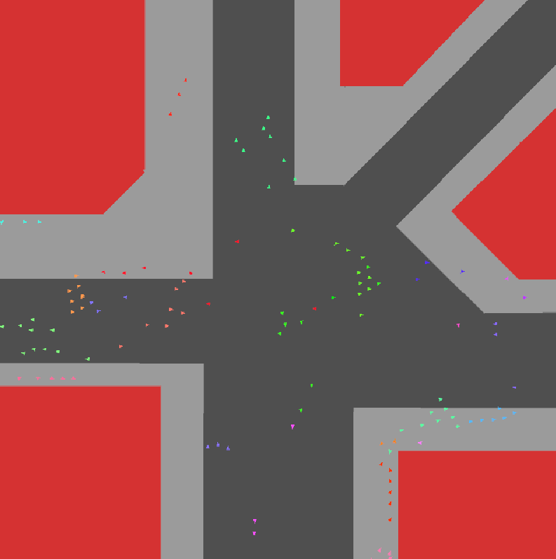

VULTUR
About VULTUR
VULTUR is by far the largest project I have worked on, with the largest team I have worked with, consisting of seven members in total. My role on this project was the lead level and weapon designer.
Lead Level Designer
As the lead level designer I was tasked with guiding the players gameplay experience, structuring the overall narrative the player would undertake throughout the gameplay. The process of creating each level consisted of a plethora of design iterations. Starting with the planning phase, I developed a paper prototype for each level, which was then followed by a grey box version that underwent multiple playtests. Based on the feedback from these sessions I iterated on each level, refining the design to better align with the player experience we aimed to deliver.
Lead Weapon Designer
As the lead weapons designer, my role closely mirrored my responsibilities in level design: designing mechanics to align with the intended player experience and validating those designs through testing. The process of designing weapons differed from that of levels; rather than using paper prototypes, weapons were developed in order of difficulty and immediately tested with both experienced and novice players. This approach enabled me to design overlapping mechanics while ensuring each weapon was tailored to the player's intended experience, designing for a diverse set of play styles rather than merely implementing standard game mechanics.
Terminal Velocity
About Terminal Velocity
Developed over 7 days as a part of the Macquarie Re-Entry Game Jam. Terminal Velocity is a fun quick paced interplanetary dodgeball. With an unlimited player limit this game is a blast for any group. This game was awarded "Best Party Game" for the Game Jam.
Lead Creative Design Director
For this project I was the lead creative design director. This role entailed overall game design and management of the team to ensure we all shared the same vision of the project.
I also was the lead level designer, this role encouraged rapid playtesting to ensure the level encouraged correct play behaviour.
This project was done in one week as part of the Macquarie 'Re-entry' Game-Jam. This time pressure made it crucial that our features were simple but still delivered the intended gameplay experience of a shifting power dynamic and tension between players.
Urban Crowd Simulation

Urban Crowd Simulation
This project was a self research study about simulating realistic social behaviours of crowds. It took 13 weeks to complete this project, with a mixture of self research and incremental development. This project taught me the fundamentals of constructive self research, increasing my ability to adapt and learn new skills quickly. It also gave me extended experience using playtests to evaluate success and investigate future direction.
Self Research
Throughout the development process, we held weekly meetings to assess progress and direction. These meetings encouraged breaking down the research into defined weekly categories that built upon one another. This approach allowed me to progressively deepen my understanding of crowd simulations. Additionally, it helped me enhance my communication skills by requiring me to consistently present research findings and project updates clearly through both documentation and dialogue.
Conducting Playtests
This project also saw my most extensive playtest from which I was able to evaluate the success of my project and investigate future directions for the project. Through this playtest I was able to uncover interesting patterns upon what changes a viewers perception of realism. Through the results of this playtest I began to pivot my research into investigating what features are most necessary to a crowd simulation and what features are less so. Through playtesting I was able to better fine tune my project to aligning with my research, while also allowing me insight into other factors of my project I had not considered. This culminated in a project that provides interesting insight and delivers an experience for the player in line with what I intended.